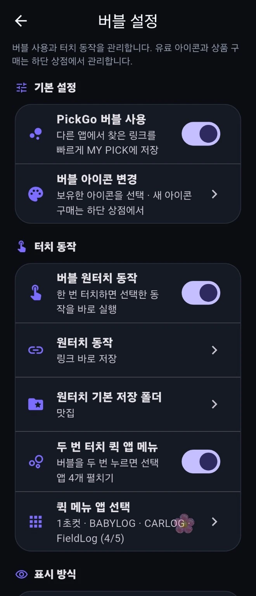
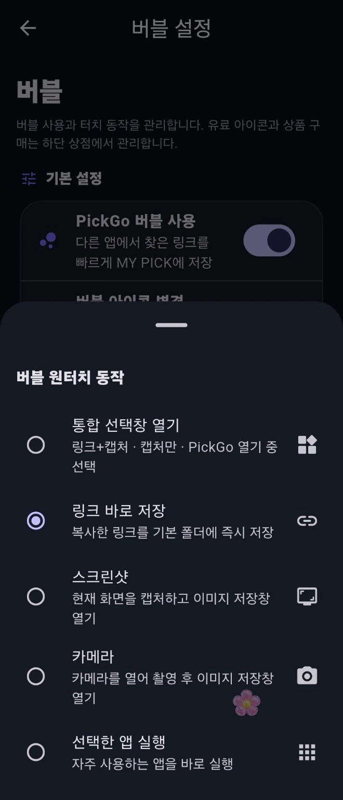
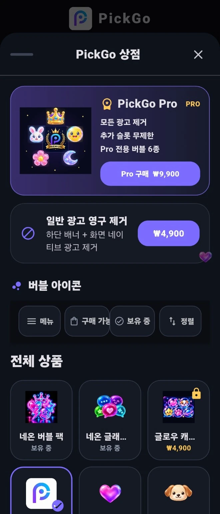

01
버블 사용 설정
다른 앱에서 보고 있던 링크를 빠르게 저장하도록 버블과 터치 동작을 설정합니다.

여행지, 맛집, 쇼핑, 이슈 링크를 보다가 버블 한 번. 저장해두고, 나중에 고민될 땐 PICK.
WHY PICKGO
PickGo는 다른 앱을 보고 있는 순간에도 바로 저장하고, 저장한 콘텐츠를 폴더별로 모은 뒤 PICK 기능으로 다시 선택할 수 있게 만든 앱입니다.
PICKGO IN 15 SECONDS
저장하고 싶은 화면 → PickGo 버블 클릭 → 저장 완료 → 폴더 → PICK → 링크 오픈.
REAL PICKGO UI
광고용 가상 UI가 아니라 실제 PickGo 화면을 사용했습니다.
다른 앱에서 보고 있던 링크를 빠르게 저장하도록 버블과 터치 동작을 설정합니다.

링크 바로 저장, 스크린샷, 카메라, 앱 실행 등 원하는 동작을 선택할 수 있습니다.

기본 P부터 네온·하트·발바닥 등 취향에 맞게 버블을 꾸밀 수 있습니다.

CORE FEATURES
앱을 왔다 갔다 할 필요 없이, 보고 있는 화면 위에서 바로 저장.
링크만 저장하거나 화면을 캡처해서 이미지 보관함에 남길 수 있습니다.
여행, 맛집, 쇼핑처럼 원하는 폴더로 나누고 썸네일과 함께 관리.
저장만 해두고 못 고르겠다면, PICK으로 하나를 골라 바로 열기.
SAVE WHAT YOU LIKE
마음에 든 순간을 그때그때 PickGo에 모아두세요. 나중에 다시 찾는 시간을 줄이고, 고르는 재미까지 더했습니다.
Google Play에서 PickGo 보기 →MORE FROM PCY STUDIO
기록·관리·선택처럼 매일 반복되는 일을 더 간단하게 만들고 있습니다.
링크 저장 · 이미지 저장 · 랜덤 PICK · 미니게임
Google Play →현장 · 정비 · 장애 · 사진 · 작업자 기록 관리
Google Play →육아 일상과 성장 기록을 가족의 방식대로
Google Play →내 차 프로필 · 정비 기록 · 사진 · 주행 정보
Google Play →PCY STUDIO
기록은 자유롭게, 화면은 직관적으로, 중요한 데이터는 안전하게. PCY Studio는 실제 생활에서 바로 쓸 수 있는 도구를 하나씩 만들고 있습니다.